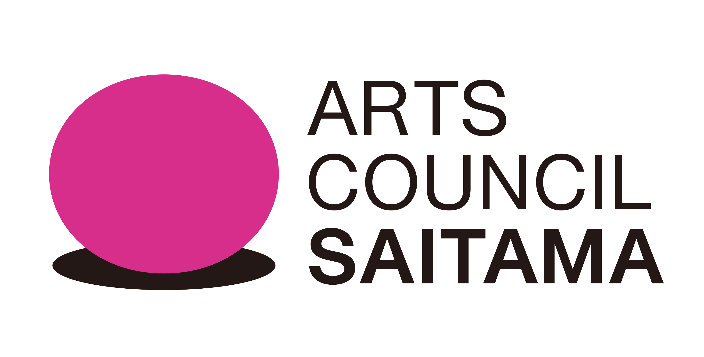

世界リスニングデーイベント
7月18日・19日に開催しました。大宮駅前から氷川参道、氷川神社、大宮公園へ、「聴くこと」を通して音風景を探索しました。
Field Recording Club Saitama
9月5日（土）・6日（日）、作曲家・サウンドアーティスト Paulo Dantasを迎え、まちを歩き、聴き、録音する2日間のワークショップを開催しました。記録は次の活動と成果展示へつないでいきます。
2026年9月5日（土）・6日（日）開催終了 / ご参加・ご関心をお寄せいただき、ありがとうございました。
Workshop
ENCOUNTERS: LISTENER, TECHNIQUE, LOCATION
「出会い：聞き手、テクニック、場所」
by Paulo Dantas
(music composer and sound artist, professor
and sound technician)
本イベントは終了しました。「都市の呼吸、ひとの気配、日常的に過ぎ去る時間を、私たちはどう書き留められるだろう？」という問いから、2日間のワークショップを開催しました。
本イベントは、Field Recording Club, Saitamaによる年度を通したプロジェクトの第２回目となる「音の記録」をテーマとしたものです。今年度は、パウロ・ダンタス（サウンドアーティスト）をゲストに迎え、大宮駅周辺で9月のフィールドレコーディング・ワークショップを開催しました。大宮公園周辺で12月に第2回を開催する予定で、来春2月にその成果展示（ワークショップ参加者みなさんの音源の展示）を行う予定です。※さいたまの”音”風景 フィールドレコーディング・ワークショップ＆成果展示発表会［アーツカウンシルさいたま文化芸術都市創造助成事業］
参考*１ パウロの展示「Paulo Dantas - Not a real city」http://www.kanzan-g.jp/exhibitions/paulo-dantas-2026/
このイベントは終了しました。ご参加・ご関心をお寄せいただき、ありがとうございました。
A: 6,500円、B: 5,000円、C: 3,500円、D（中学生以下限定）: 2,000円

Paulo Dantas / パウロ・ダンタス
1981年ブラジル・リオデジャネイロ生まれ。作曲家、サウンドアーティスト、音響エンジニアとして活動するほか、リオデジャネイロ州連邦大学で教授を務める。2023年、研究のためのサバティカル休暇で来日し、現在は茨城県ひたちなか市在住。主な関心領域は、フィールド・レコーディング実践の芸術的活用、「不確定性」や「協働（コラボレーション）」の概念が創造プロセスにもたらす影響など。最近の創作活動では、さまざまな録音機器、シンセサイザー、テキスト、その他のオブジェクトの思索的な運用を通じて、音楽、フィールドレコーディング、サウンドデザイン、およびその他の芸術表現との間に新たな対話を生み出すことを探求している。
主催：Field Recording Club, Saitama / フィールド・レコーディング・クラブさいたま
助成：アーツカウンシルさいたま［アーツカウンシルさいたま文化芸術都市創造助成事業］
機材協力：株式会社ズーム / ZOOM CORPORATION、WHISMR（ウイスマー）合同会社
World Listening Day 7/18 / Same Program 7/18-19
本イベントは終了しました。7月18日・19日の2日間、フィールドレコーディング
夜の大宮公園はどんな音がしていると思いますか？ 本イベントは、国際的な記念日 World Listening Day（世界リスニングデー）関連企画として、2026年7月18日（土）と19日（日）に開催したサウンドウォークです。
さいたま市を拠点に活動する Field Recording Club, Saitama のメンバーと共にまちを歩き、普段の生活で見過ごしがちな「聴覚」や「環境音」への理解を深めます。徒歩20分（約1.5km）程度の距離を、体験と共有を交えながら約2時間かけて歩きます。
夏の夕刻、大宮駅前（都市・喧騒）から氷川参道へ、そして武蔵一宮氷川神社・大宮公園（自然・静寂）へ。変化する音の風景（サウンドスケープ）を身体・五感をつかって楽しみます。静かに音を聴く「静」の体験と、感じたことを共有し響き合わせる「動」の体験をセットで行う、まちと環境音にまつわる探究型プログラムです。
このイベントは終了しました。ご参加・ご関心をお寄せいただき、ありがとうございました。
前半はグループで沈黙を保ちながら五感を研ぎ澄ませて歩く体験（耳が開く体験）と、感じた音を共有しながら歩く体験を行います。街の雑踏、建物の反響、風の音、蝉の声、鐘の音など、その瞬間・その土地ならではの音の断片を拾い集めます。
後半は夕暮れの氷川参道〜氷川神社をゆっくり歩き、歴史とつながる音風景を探索します。最後に、発見した音や風景、心の動きを参加者同士で再共有する交流の時間を設けます。
Project
7月18日・19日に開催しました。大宮駅前から氷川参道、氷川神社、大宮公園へ、「聴くこと」を通して音風景を探索しました。
パウロ・ダンタス（サウンドアーティスト）をゲストに迎え、大宮駅周辺で9月のワークショップを開催しました。大宮公園周辺で12月に第2回を開催し、来春2月に成果展示へつなげる予定です。
2027年2月の開催を予定しています。音、テキスト、地図、写真、オブジェクトなどを組み合わせて展示します。
録音地点、メモ、写真を整理し、さいたまの音風景として残します。
本事業は、 アーツカウンシルさいたま文化芸術都市創造助成事業 の採択事業です。

Sound Map
地図上の録音地点を選ぶと、Livingroom TapesのSoundCloud音源と録音メモが切り替わります。
Map data © OpenStreetMap contributors / 録音地点はSoundCloudの表記から推定
Listening Notes
夕方の参道。人の声は遠く、足音だけが木々の間に残る。車の音も、鳥の声も、同じ風景の中にある。
駅前の音は騒がしい。けれど、少し離れて聴くと、まちが呼吸しているようにも感じる。
Program
フィールドレコーディングクラブさいたまと歩き、大宮の音風景を探索しました。ご参加・ご関心をお寄せいただき、ありがとうございました。
開催終了受付 15:30〜 / 開始 16:00
コミュニケーション・サウンドウォーク（徒歩約1.5km / 約2時間）
ルート 大宮駅周辺・大宮一番街商店街〜氷川参道〜武蔵一宮氷川神社・大宮公園
体験内容 沈黙して歩く時間、音や風景の記録、参加者同士の共有
Paulo Dantasを迎え、まちを歩き、聴き、録音する2日間のワークショップを開催しました。ご参加・ご関心をお寄せいただき、ありがとうございました。
開催終了＜集合＞ まちラボおおみや / URBAN DESIGN CENTER OMIYA (15:30 開場・受付開始） (JR大宮駅東口より徒歩１分）
＜定員＞ 14名 ＜参加対象＞ 2日連続参加できる方。小学3年生以上推奨。
＜参加費＞ A: 6,500円、B: 5,000円、C: 3,500円、D（中学生以下限定）: 2,000円
Paulo Dantasを迎え、第1回から続くフィールドレコーディングワークショップを予定しています。
録音した音、テキスト、地図、写真、オブジェクトなどを組み合わせ、さいたまの音風景を紹介します。
About
さいたま市を拠点にするフィールドレコーデイングに関心のあるメンバーが集まる自由参加型のコミュニティです。
みんなでプロジェクトを企画したり、いろいろな活動しています。
主な活動
①音やフィールドレコーディングに関する情報交換、交流会、勉強会の開催
②まちや文化や歴史、自然などにまつわる音の記録、編集・発表
③音や音楽にまつわるイベントの開催、地域イベントへの参加 など
Join